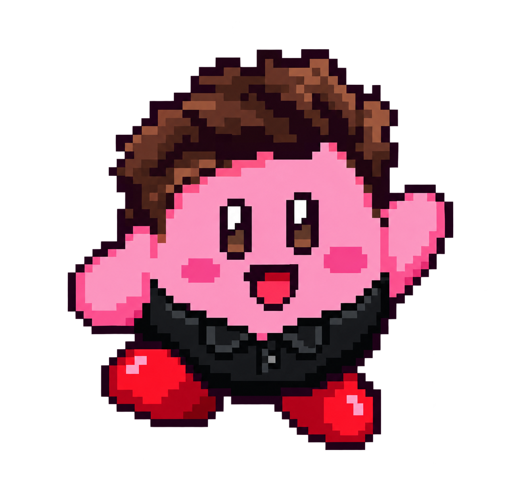
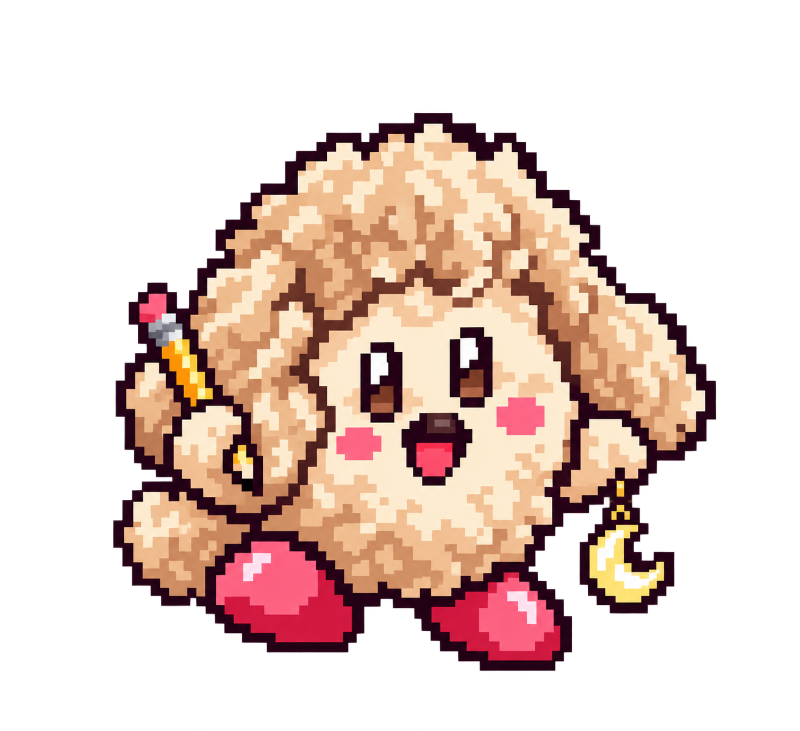
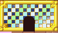
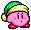

GRIFFIN RUTHERFORD
Connected by curiosity.
Building things that help people learn.
Finding inspiration beyond the screen.
A desktop for
curious minds.
Technology that helps people learn.
Adventures that keep me curious.
WINDOWS 2100 · A SPECULATIVE DESKTOP
Build beyond
the horizon.
An imagined workspace for the next century. The curiosity behind it is already here.
Four glass panes form a window in space. Drag or use arrow keys to turn the camera; Home restores the front view. The rings are a visual flourish.
HYPERCUBE / AN EXPLORABLE SPACE
Curiosity has
another dimension.
I build technology that helps people learn. Sometimes the best way to understand an idea is to turn it, question it, and see it from a new angle.
A square gains a new direction to become a cube. Give a cube one more independent direction and you get a tesseract. We can explore its projection, just as a cube casts a flat shadow.
16 vertices · 32 edges · 4 independent directions. Drag to orbit the projection.

PLAYER 1: GRIFFIN KIRBY

PLAYER 2: ???
PLAYER 2: LUNA KIRBY
CLICK TO REVEAL
 About Me |
|||
SNES • 1996 • DREAM LAND
KIRBY'S COPY ABILITY CABINET
Choose your power-up! Twenty-five little pieces of Dream Land are here to explore.

Sprites from WiKirby; level tiles from VGMaps. Original game art © Nintendo / HAL Laboratory.
WELCOME TO MY HOMEPAGE!
MY RESUME
Experience
- Leadership & product
Chief Technology Officer
Coherascent Labs
Jan 2026 – Present
Architecting Lune Synth: 600k+ lines of code turning handwritten work into useful feedback. Leading technical strategy and engineering for an education technology and research company.
- Ideas & conversation
Podcast Co-Host
Malestrum: The Third Phase
A father-son podcast exploring the civilizational shift driven by AI and the personal changes that follow career and family.
- AI engineering
AI Implementation Engineer
TrueFlow AI
Feb 2025 – Jan 2026
Built production AI automation, custom LLM workflows, and retrieval pipelines connected to real customer workflows.
- Public service & security
Cybersecurity Digital Innovation Intern
Jefferson County
Jun – Aug 2024
Created practical cybersecurity and generative AI training with the county CIO and CISO. Won Best Booth at the county Tech Showcase.
- Accessible technology
Software Engineering Intern
CACI International
May – Aug 2023
Built positioning algorithms and an autocalibration tool for a Bluetooth navigation system serving blind and visually impaired people.
- Community building
Resident Advisor
Colorado School of Mines
Jul – Nov 2022
Supported around 50 upperclassmen through community events, one-on-one conversations, and residence hall duties.
Education
- Computer science
Combined B.S. & M.S.
Colorado School of Mines
2020 – 2025
Computer science with a specialization in AI, machine learning, and data science.
- Where curiosity started
High School
Santa Fe Prep
2015 – 2020
Track captain and theater participant, bringing athletics, creativity, and learning together.
WHAT I KNOW
*** PEOPLE SKILLS ***
COOL STUFF I MADE
| Explore the app! | |
| Check it out! | |
| See the math! | |
| Mind = Blown | |
| Code on GitHub! |
No projects match. Try another name.
SIGN MY GUESTBOOK!
"Awesome site! Keep up the great work!"
"Love the matrix rain effect! Totally stealing it for my site!"
"Your JavaScript skills are off the hook! Email me!"
-=- COMPUTER SCIENCE WEBRING -=-
FIND ME ON THE INFORMATION SUPERHIGHWAY!
| @ EMAIL: | griffin@cyberspace.net |
| ICQ: | 12345678 |
| AIM: | GriffinCoder2000 |
NETSCAPE NAVIGATOR 4.0+
OPTIMIZED
All Rights Reserved | No Stealing My Code!